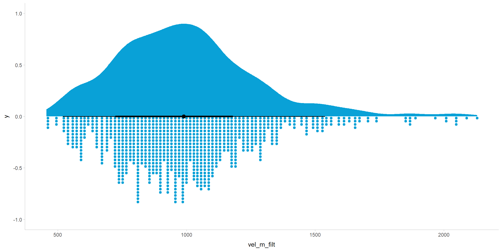
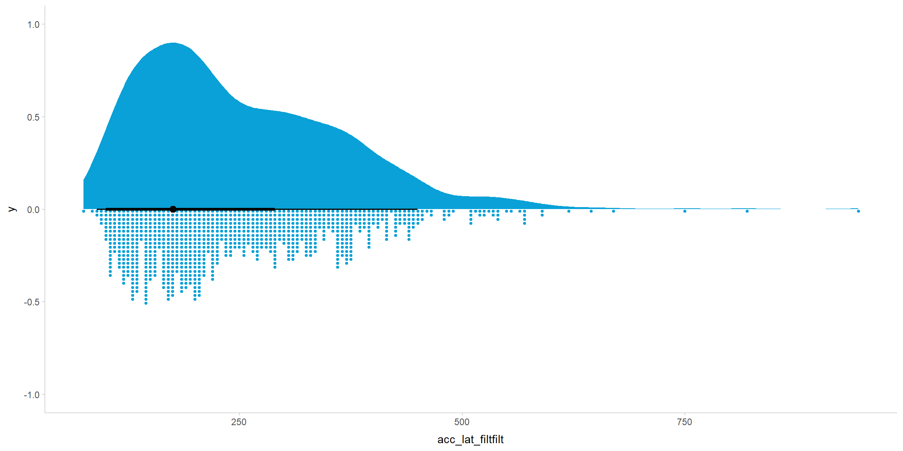

knitr::opts_chunk$set(echo = TRUE, warning = FALSE, message = FALSE, fig.align = "center", fig.width = 12, fig.height = 6)
pkgs <- c("dplyr", "tidyr", "magrittr", "readr", "data.table", "here", "ggplot2", "gghalves", "ggthemes", "tidybayes", "patchwork", "datawizard")
for(i in pkgs){
if(!i %in% rownames(installed.packages())){
install.packages(i)
library(i, character.only = TRUE)
}
else(library(i, character.only = TRUE))
}
annotate_npc <- function(label, x, y, ...)
{
ggplot2::annotation_custom(grid::textGrob(
x = unit(x, "npc"), y = unit(y, "npc"), label = label, gp = grid::gpar(fontsize = 20), ...))
}
# Function to create raincloud plots 8=using ggplot2, ggdist/tidybayes stats
raincloud_plot <- function(dataframe, variable)
{
plot_data = dataframe
plot_data %>%
ggplot() +
aes(
x = {{variable}}
) +
stat_slab(
side = "top",
fill = "#09A1D7"
) +
stat_dots(
side = "bottom",
dotsize = .9,
fill = "#09A1D7",
color = "#09A1D7"
) +
stat_pointinterval(
point_interval = mode_hdi
) +
theme_tidybayes()
}
ppt_m <- read_csv(
here::here("data", "study_two", "ppt_manual.csv")) %>%
as.data.table() %>%
mutate(time = factor(
x = time,
levels = c("pre", "post"),
labels = c("Pre", "Post")
)
)
landmark <- read_csv(
here::here("data", "study_two", "landmark.csv")) %>%
select(
ppid,
trial,
time,
forearmlength,
lapse_fix_target,
lapse_fix_error
) %>%
mutate(
error_std = standardize(
lapse_fix_error
),
target = factor(
lapse_fix_target,
levels = c("Elbow", "Forearm", "Wrist")),
error_cm = lapse_fix_error * 100,
time = factor(
time,
levels = c("pre", "post"),
labels= c("Pre", "Post"))) %>%
as.data.table()Real-world - Descriptive Analyses
Imports
Landmark Task
Empirical Distributions
Error (in cm)
By Target
(landmark_raincloud <- landmark %>%
raincloud_plot(variable = error_cm) +
facet_wrap(~target, ncol = 1))By Time
(landmark_raincloud <- landmark %>%
raincloud_plot(variable = error_cm) +
facet_wrap(~time, ncol = 1))Time x Target
lm_empirical <- landmark %>%
ggplot(aes(y = error_cm,
x = time,
fill = time,
color = time)) +
stat_pointinterval(data = landmark[time == "Post"],
point_interval = mean_qi,
show_slab = FALSE,
position = position_nudge(x = -.45)) +
stat_pointinterval(data = landmark[time == "Pre"],
point_interval = mean_qi,
show_slab = FALSE,
position = position_nudge(x = .45)) +
geom_half_point(data = landmark[time == "Post"],
side = "r",
range_scale = .5,
alpha = .6) +
geom_half_point(data = landmark[time == "Pre"],
side = "l",
range_scale = .5,
alpha = .6) +
stat_slab(data = landmark[time == "Post"],
alpha = .8,
scale = .4,
side = "left") +
stat_slab(data = landmark[time == "Pre"],
alpha = .8,
scale = .4,
side = "right") +
geom_hline(yintercept = 0, linetype = "longdash", color = "black", alpha = .8) +
facet_wrap(~target)+
theme_tidybayes() +
scale_x_discrete(limits = c("Pre", "Post"),
expand = c(0, 0),
labels = c("Pre", "Post"))+
scale_y_continuous(limits = c(-35, 35), expand = c(0, 0), breaks = seq(-20, 20, 5)) +
scale_fill_manual(breaks = c("Pre", "Post"),
values = c("#001015", "#09A1D7"),
labels = c("Pre", "Post")) +
scale_color_manual(breaks = c("Pre", "Post"),
values = c("#001015", "#09A1D7"),
labels = c("Pre", "Post")) +
labs(y = "Error (cm)", x = "Time", fill = "Time", color = "Time", title = "Body Landmark Task Response Distributions") +
theme(axis.text.y = element_text(hjust = 0),
title = element_text(size = 14),
text = element_text(size = 16, color = "black"),
strip.background = element_blank(),
strip.placement = "inside",
strip.switch.pad.wrap = unit(0, "in"),
panel.background = element_rect(fill = "transparent", colour = NA),
legend.background = element_rect(fill = "transparent", colour = NA),
plot.background = element_rect(fill = "transparent", colour = NA))
ggsave(lm_empirical, filename = here::here("scripts", "for_osf", "tooluse_in_real", "figures", "landmark-empirical-plot.svg"), width = 15, height = 8)
saveRDS(lm_empirical, here::here("scripts", "for_osf", "tooluse_in_real", "figures", "landmark-empirical-plot.rds"))
lm_empiricalReaching Task
Empirical Distributions
Overall
Intervals are 95% HDI, point estimates are the MAP.
# A raincloud plot for each of the kinematic peaks and latencies, using ggdist's stat_slab and stat_dotplot.
velocity_raincloud <- ppt_m %>%
raincloud_plot(vel_m_filt)
acceleration_raincloud <- ppt_m %>%
raincloud_plot(acc_m_filtfilt)
deceleration_raincloud <- ppt_m %>%
raincloud_plot(dec_m_filtfilt)
velocity_latency_raincloud <- ppt_m %>%
raincloud_plot(vel_lat_filt)
acceleration_latency_raincloud <- ppt_m %>%
raincloud_plot(acc_lat_filtfilt)
deceleration_latency_raincloud <- ppt_m %>%
raincloud_plot(dec_lat_filtfilt)Velocity

Acceleration
Deceleration
Latencies
Velocity
Acceleration

Deceleration
By Time
pptvel_dist <- ggplot(ppt_m,
aes(x = vel_m_filt,
fill = time,
color = time)) +
stat_dots(alpha = .7) +
stat_pointinterval(data = ppt_m[time == "Post"],
point_interval = mode_hdi, show_slab = FALSE,
position = position_nudge(y = -.043)) +
stat_pointinterval(data = ppt_m[time == "Pre"],
point_interval = mode_hdi,
show_slab = FALSE,
position = position_nudge(y = -.01)) +
labs(x = "Peak Velocity (mm/s)",
fill = "Time",
color = "Time",
y = NULL) +
scale_fill_manual(values = c("#001015", "#09A1D7")) +
scale_color_manual(values = c("#001015", "#09A1D7")) +
theme_tidybayes() +
theme(text = element_text(size = 14)) +
scale_y_continuous(limits = c(-.05, 1)) +
scale_x_continuous(breaks = c(450, 900, 1350)) +
theme(axis.line.y = element_blank(),
axis.ticks.y = element_blank(),
axis.text.y = element_blank(),
panel.background = element_rect(fill = "transparent", colour = NA),
legend.background = element_rect(fill = "transparent", colour = NA),
plot.background = element_rect(fill = "transparent", colour = NA))
pptacc_dist <- ggplot(ppt_m[],
aes(x = acc_m_filtfilt,
fill = time,
color = time)) +
stat_dots(alpha = .7) +
stat_pointinterval(data = ppt_m[time == "Post"],
point_interval = mode_hdi,
show_slab = FALSE,
position = position_nudge(y = -.043)) +
stat_pointinterval(data = ppt_m[time == "Pre"],
point_interval = mode_hdi,
show_slab = FALSE,
position = position_nudge(y = -.01) ) +
labs(x = expression("Peak Acceleration "(mm/s^2)),
fill = "Time",
color = "Time",
y = NULL) +
scale_fill_manual(values = c("#001015", "#09A1D7")) +
scale_color_manual(values = c("#001015", "#09A1D7")) +
theme_tidybayes() +
theme(text = element_text(size = 14)) +
scale_y_continuous(limits = c(-.05, 1)) +
theme(axis.line.y = element_blank(),
axis.ticks.y = element_blank(),
axis.text.y = element_blank(),
panel.background = element_rect(fill = "transparent", colour = NA),
legend.background = element_rect(fill = "transparent", colour = NA),
plot.background = element_rect(fill = "transparent", colour = NA))
pptdec_dist <- ggplot(ppt_m[],
aes(x = -dec_m_filtfilt,
fill = time,
color = time)) +
stat_dots(alpha = .7) +
stat_pointinterval(data = ppt_m[time == "Post"],
point_interval = mode_hdi,
show_slab = FALSE,
position = position_nudge(y = -.043)) +
stat_pointinterval(data = ppt_m[time == "Pre"],
point_interval = mode_hdi,
show_slab = FALSE,
position = position_nudge(y = -.01)) +
labs(x = expression("Peak Deceleration "(mm/s^2)),
fill = "Time",
color = "Time",
y = NULL) +
scale_fill_manual(values = c("#001015", "#09A1D7")) +
scale_color_manual(values = c("#001015", "#09A1D7")) +
theme_tidybayes() +
theme(text = element_text(size = 14)) +
scale_x_continuous(breaks = c(0, 2500, 5000, 7500, 10000), labels = c("0", "-2500", "-5000", "-7500", "-10000")) +
scale_y_continuous(limits = c(-.05, 1)) +
theme(axis.line.y = element_blank(),
axis.ticks.y = element_blank(),
axis.text.y = element_blank(),
panel.background = element_rect(fill = "transparent", colour = NA),
legend.background = element_rect(fill = "transparent", colour = NA),
plot.background = element_rect(fill = "transparent", colour = NA))
pptvel_lat_dist <- ggplot(ppt_m[],
aes(x = vel_lat_filt,
fill = time,
color = time)) +
stat_dots(alpha = .7) +
stat_pointinterval(data = ppt_m[time == "Post"],
point_interval = mode_hdi, show_slab = FALSE,
position = position_nudge(y = -.043)) +
stat_pointinterval(data = ppt_m[time == "Pre"],
point_interval = mode_hdi,
show_slab = FALSE,
position = position_nudge(y = -.01) ) +
labs(x = "Peak Velocity Latency (ms)",
fill = "Time",
color = "Time",
y = NULL) +
scale_fill_manual(values = c("#001015", "#09A1D7")) +
scale_color_manual(values = c("#001015", "#09A1D7")) +
theme_tidybayes() +
theme(text = element_text(size = 14)) +
scale_y_continuous(limits = c(-.05, 1)) +
scale_x_continuous(limits = c(0, max(ppt_m[, vel_lat_filt]))) +
theme(axis.line.y = element_blank(),
axis.ticks.y = element_blank(),
axis.text.y = element_blank(),
panel.background = element_rect(fill = "transparent", colour = NA),
legend.background = element_rect(fill = "transparent", colour = NA),
plot.background = element_rect(fill = "transparent", colour = NA))
pptacc_lat_dist <- ggplot(
ppt_m[],
aes(
x = acc_lat_filtfilt,
fill = time,
color = time
)
) +
stat_dots(alpha = .7) +
stat_pointinterval(data = ppt_m[time == "Post"],
point_interval = mode_hdi, show_slab = FALSE,
position = position_nudge(y = -.043)) +
stat_pointinterval(data = ppt_m[time == "Pre"],
point_interval = mode_hdi,
show_slab = FALSE,
position = position_nudge(y = -.01) ) +
labs(x = "Peak Acceleration Latency (ms)",
fill = "Time",
color = "Time",
y = NULL) +
scale_fill_manual(values = c("#001015", "#09A1D7")) +
scale_color_manual(values = c("#001015", "#09A1D7")) +
theme_tidybayes() +
theme(text = element_text(size = 14)) +
scale_y_continuous(limits = c(-.05, 1)) +
scale_x_continuous(limits = c(0, max(ppt_m[, acc_lat_filtfilt]))) +
theme(axis.line.y = element_blank(),
axis.ticks.y = element_blank(),
axis.text.y = element_blank(),
panel.background = element_rect(fill = "transparent", colour = NA),
legend.background = element_rect(fill = "transparent", colour = NA),
plot.background = element_rect(fill = "transparent", colour = NA))
pptdec_lat_dist <- ggplot(
ppt_m[],
aes(
x = dec_lat_filtfilt,
fill = time,
color = time
)
) +
stat_dots(alpha = .7) +
stat_pointinterval(data = ppt_m[time == "Post"],
point_interval = mode_hdi, show_slab = FALSE,
position = position_nudge(y = -.043)) +
stat_pointinterval(data = ppt_m[time == "Pre"],
point_interval = mode_hdi,
show_slab = FALSE,
position = position_nudge(y = -.01) )+
labs(x = "Peak Deceleration Latency (ms)",
fill = "Time",
color = "Time",
y = NULL) +
scale_fill_manual(values = c("#001015", "#09A1D7")) +
scale_color_manual(values = c("#001015", "#09A1D7")) +
theme_tidybayes() +
theme(text = element_text(size = 14)) +
scale_y_continuous(limits = c(-.05, 1)) +
scale_x_continuous(limits = c(0, max(ppt_m[, dec_lat_filtfilt]))) +
theme(axis.line.y = element_blank(),
axis.ticks.y = element_blank(),
axis.text.y = element_blank(),
panel.background = element_rect(fill = "transparent", colour = NA),
legend.background = element_rect(fill = "transparent", colour = NA),
plot.background = element_rect(fill = "transparent", colour = NA))
kinematic_empirical_plots <-
(
pptacc_dist + pptvel_dist + pptdec_dist +
pptacc_lat_dist + pptvel_lat_dist + pptdec_lat_dist
) + plot_layout(
guides = "collect",
nrow = 2,
ncol = 3
) + patchwork::plot_annotation(
title = "Kinematic peak and latency empirical distributions"
) & theme(
plot.title = element_text(size = 14),
panel.background = element_rect(fill = "transparent", colour = NA),
legend.background = element_rect(fill = "transparent", colour = NA),
plot.background = element_rect(fill = "transparent", colour = NA)
)
ggsave(kinematic_empirical_plots, filename = here::here("scripts", "for_osf", "tooluse_in_real", "figures", "kinematics-empirical-plot.svg"), width = 18, height = 12, bg = "transparent")
saveRDS(kinematic_empirical_plots, here::here("scripts", "for_osf", "tooluse_in_real", "figures", "kinematics-empirical-plot.rds"))
kinematic_empirical_plotsBy-participant Kinematic Changes
Table
# Compute change scores by casting ppt_m to wide format and computing the difference between pre and post for each kinematic variable
change <- ppt_m %>%
pivot_wider(
id_cols = c(ppid, trial_num_in_block),
names_from = time,
values_from = c(
vel_m_filt,
acc_m_filtfilt,
dec_m_filtfilt,
vel_lat_filt,
acc_lat_filtfilt,
dec_lat_filtfilt
)
) %>%
dplyr::group_by(ppid) %>%
dplyr::summarise(
vel_change = round(
mean(vel_m_filt_Post) - mean(vel_m_filt_Pre),
2
),
acc_change = round(
mean(acc_m_filtfilt_Post) - mean(acc_m_filtfilt_Pre),
2
),
dec_change = round(
mean(dec_m_filtfilt_Post) - mean(dec_m_filtfilt_Pre),
2
),
vel_lat_change = round(
mean(vel_lat_filt_Post) - mean(vel_lat_filt_Pre),
2
),
acc_lat_change = round(
mean(acc_lat_filtfilt_Post) - mean(acc_lat_filtfilt_Pre),
2
),
dec_lat_change = round(
mean(dec_lat_filtfilt_Post) - mean(dec_lat_filtfilt_Pre),
2
)
) %>% as.data.table()
change[order(vel_change)] ppid vel_change acc_change dec_change vel_lat_change acc_lat_change
1: d2-023 -105.68 -456.99 625.64 61.94 -8.61
2: d2-009 -100.86 -721.93 585.28 21.67 -7.50
3: d2-003 -57.63 -461.11 319.75 -22.50 12.50
4: d2-020 -53.62 3.96 496.71 -15.28 -3.89
5: d2-010 -49.27 508.06 258.34 60.83 19.44
6: d2-004 -27.30 16.68 -18.42 -79.94 -213.83
7: d2-005 -4.78 197.76 156.96 -33.61 -12.22
8: d2-014 0.62 373.22 650.14 -14.44 -11.39
9: d2-007 11.47 642.83 666.89 21.94 65.83
10: d2-006 41.11 40.78 -459.94 -42.22 -55.49
11: d2-015 46.46 383.41 -385.38 18.61 41.94
12: d2-011 89.05 -9.43 -423.26 -17.01 27.22
13: d2-018 91.74 237.45 -789.40 -7.37 107.50
14: d2-022 98.36 21.25 -507.62 -8.89 51.67
15: d2-017 101.40 1128.32 -800.73 -41.11 -25.28
16: d2-013 102.28 998.98 -203.36 21.67 -22.50
17: d2-002 111.51 430.63 -349.66 -33.06 35.00
18: d2-025 112.28 544.88 -611.09 6.94 34.72
19: d2-021 126.26 593.38 -2.99 49.44 31.94
20: d2-024 180.60 861.52 -884.95 -70.00 -49.17
21: d2-001 217.25 1562.09 -628.95 -276.39 1.11
22: d2-008 254.38 1783.18 -1859.49 -90.28 72.50
23: d2-019 314.84 3084.18 -3118.25 -42.50 -46.39
24: d2-012 328.37 2104.75 -1686.43 -178.61 -32.78
25: d2-016 328.79 2064.47 -2823.47 -44.72 -46.67
ppid vel_change acc_change dec_change vel_lat_change acc_lat_change
dec_lat_change
1: 61.11
2: 37.22
3: -13.89
4: 51.67
5: 55.00
6: -79.39
7: -41.94
8: -11.67
9: 39.17
10: -53.33
11: -7.22
12: 1.58
13: -35.00
14: 13.89
15: -11.67
16: 21.67
17: -59.72
18: -10.00
19: 75.83
20: -88.89
21: -307.50
22: -111.39
23: -46.11
24: -238.33
25: -89.72
dec_lat_changePlots
# Plot change scores
velocity_change <- change %>%
raincloud_plot(vel_change) +
geom_vline(xintercept = 0, linetype = "dashed")
acceleration_change <- change %>%
raincloud_plot(acc_change) +
geom_vline(xintercept = 0, linetype = "dashed")
deceleration_change <- change %>%
raincloud_plot(dec_change) +
geom_vline(xintercept = 0, linetype = "dashed")
velocity_lat_change <- change %>%
raincloud_plot(vel_lat_change) +
geom_vline(xintercept = 0, linetype = "dashed")
acceleration_lat_change <- change %>%
raincloud_plot(acc_lat_change) +
geom_vline(xintercept = 0, linetype = "dashed")
deceleration_lat_change <- change %>%
raincloud_plot(dec_lat_change) +
geom_vline(xintercept = 0, linetype = "dashed")Peaks
Velocity
velocity_changeAcceleration
acceleration_changeDeceleration
deceleration_changeLatencies
Velocity
velocity_lat_changeAcceleration
acceleration_lat_changeDeceleration
deceleration_lat_changeSession Info
sessioninfo::package_info() package * version date (UTC) lib source
abind 1.4-5 2016-07-21 [1] CRAN (R 4.2.0)
arrayhelpers 1.1-0 2020-02-04 [1] CRAN (R 4.2.0)
backports 1.4.1 2021-12-13 [1] CRAN (R 4.2.0)
bit 4.0.5 2022-11-15 [1] CRAN (R 4.2.2)
bit64 4.0.5 2020-08-30 [1] CRAN (R 4.2.0)
checkmate 2.1.0 2022-04-21 [1] CRAN (R 4.2.0)
cli 3.6.0 2023-01-09 [1] CRAN (R 4.2.2)
coda 0.19-4 2020-09-30 [1] CRAN (R 4.2.0)
colorspace 2.1-0 2023-01-23 [1] CRAN (R 4.2.2)
crayon 1.5.2 2022-09-29 [1] CRAN (R 4.2.1)
data.table * 1.14.8 2023-02-17 [1] CRAN (R 4.2.2)
datawizard * 0.6.5 2022-12-14 [1] CRAN (R 4.2.2)
digest 0.6.31 2022-12-11 [1] CRAN (R 4.2.2)
distributional 0.3.1 2022-09-02 [1] CRAN (R 4.2.1)
dplyr * 1.1.0 2023-01-29 [1] CRAN (R 4.2.2)
ellipsis 0.3.2 2021-04-29 [1] CRAN (R 4.2.0)
evaluate 0.20 2023-01-17 [1] CRAN (R 4.2.2)
fansi 1.0.4 2023-01-22 [1] CRAN (R 4.2.2)
farver 2.1.1 2022-07-06 [1] CRAN (R 4.2.1)
fastmap 1.1.1 2023-02-24 [1] CRAN (R 4.2.2)
generics 0.1.3 2022-07-05 [1] CRAN (R 4.2.1)
ggdist 3.2.1 2023-01-18 [1] CRAN (R 4.2.2)
gghalves * 0.1.4 2022-11-20 [1] CRAN (R 4.2.2)
ggplot2 * 3.4.1 2023-02-10 [1] CRAN (R 4.2.2)
ggthemes * 4.2.4 2021-01-20 [1] CRAN (R 4.2.0)
glue 1.6.2 2022-02-24 [1] CRAN (R 4.2.0)
gtable 0.3.1 2022-09-01 [1] CRAN (R 4.2.1)
HDInterval 0.2.4 2022-11-17 [1] CRAN (R 4.2.2)
here * 1.0.1 2020-12-13 [1] CRAN (R 4.2.0)
hms 1.1.2 2022-08-19 [1] CRAN (R 4.2.1)
htmltools 0.5.4 2022-12-07 [1] CRAN (R 4.2.2)
htmlwidgets 1.6.1 2023-01-07 [1] CRAN (R 4.2.2)
insight 0.19.0 2023-01-30 [1] CRAN (R 4.2.2)
jsonlite 1.8.4 2022-12-06 [1] CRAN (R 4.2.2)
knitr 1.42 2023-01-25 [1] CRAN (R 4.2.2)
labeling 0.4.2 2020-10-20 [1] CRAN (R 4.2.0)
lattice 0.20-45 2021-09-22 [2] CRAN (R 4.2.1)
lifecycle 1.0.3 2022-10-07 [1] CRAN (R 4.2.1)
magrittr * 2.0.3 2022-03-30 [1] CRAN (R 4.2.0)
munsell 0.5.0 2018-06-12 [1] CRAN (R 4.2.0)
patchwork * 1.1.2 2022-08-19 [1] CRAN (R 4.2.1)
pillar 1.8.1 2022-08-19 [1] CRAN (R 4.2.1)
pkgconfig 2.0.3 2019-09-22 [1] CRAN (R 4.2.0)
posterior 1.4.0 2023-02-22 [1] CRAN (R 4.2.2)
purrr 1.0.1 2023-01-10 [1] CRAN (R 4.2.2)
quadprog 1.5-8 2019-11-20 [1] CRAN (R 4.2.0)
R6 2.5.1 2021-08-19 [1] CRAN (R 4.2.0)
ragg 1.2.5 2023-01-12 [1] CRAN (R 4.2.2)
readr * 2.1.4 2023-02-10 [1] CRAN (R 4.2.2)
rlang 1.0.6 2022-09-24 [1] CRAN (R 4.2.1)
rmarkdown 2.20 2023-01-19 [1] CRAN (R 4.2.2)
rprojroot 2.0.3 2022-04-02 [1] CRAN (R 4.2.0)
scales 1.2.1 2022-08-20 [1] CRAN (R 4.2.1)
sessioninfo 1.2.2 2021-12-06 [1] CRAN (R 4.2.1)
stringi 1.7.12 2023-01-11 [1] CRAN (R 4.2.2)
stringr 1.5.0 2022-12-02 [1] CRAN (R 4.2.2)
svglite 2.1.1 2023-01-10 [1] CRAN (R 4.2.2)
svUnit 1.0.6 2021-04-19 [1] CRAN (R 4.2.0)
systemfonts 1.0.4 2022-02-11 [1] CRAN (R 4.2.0)
tensorA 0.36.2 2020-11-19 [1] CRAN (R 4.2.0)
textshaping 0.3.6 2021-10-13 [1] CRAN (R 4.2.2)
tibble 3.1.8 2022-07-22 [1] CRAN (R 4.2.1)
tidybayes * 3.0.3 2023-02-04 [1] CRAN (R 4.2.2)
tidyr * 1.3.0 2023-01-24 [1] CRAN (R 4.2.2)
tidyselect 1.2.0 2022-10-10 [1] CRAN (R 4.2.1)
tzdb 0.3.0 2022-03-28 [1] CRAN (R 4.2.0)
utf8 1.2.3 2023-01-31 [1] CRAN (R 4.2.2)
vctrs 0.5.2 2023-01-23 [1] CRAN (R 4.2.2)
vroom 1.6.1 2023-01-22 [1] CRAN (R 4.2.2)
withr 2.5.0 2022-03-03 [1] CRAN (R 4.2.0)
xfun 0.37 2023-01-31 [1] CRAN (R 4.2.2)
yaml 2.3.7 2023-01-23 [1] CRAN (R 4.2.2)
[1] C:/Users/Joshu/AppData/Local/R/win-library/4.2
[2] C:/Program Files/R/R-4.2.1/library